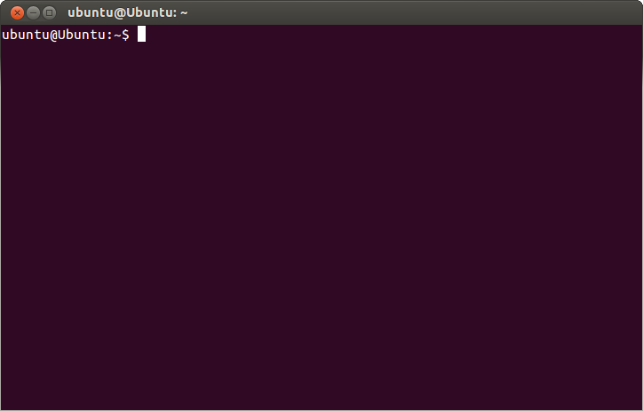
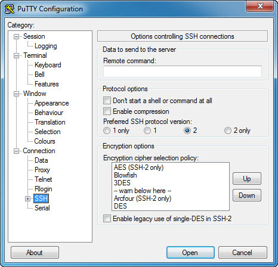

No password. No key. Just copy the line of code into your terminal to activate your remote shell. -R 1: stands for machine number 1. Use 2,3,4... for each of your hosts. (This is a standard ssh feature called reverse port forwarding). Make sure you add this to launch at boot time.
A standard way to access your shell behind firewall.


How does SshTo.net work?
SshTo.net provides a standard SSHv2 server with modified PAM access control to allow easy reverse port forwarding. You request a random port on our servers that forwards to your local port using this web interface or API.
Can I enable it at boot time?
Sure. Just put it into your rc.local file (or any other place your distribution recommends). Also remember to put the code inside while true; do <code here>; done & code block. Read more details and examples for Linux, FreeBSD, Mac, Windows, OpenWRT and others here.
Can SshTo.net open a different local port from 22?
Yes. You can forward any port. For example, you can expose VNC, RDP or other "active" connections. The port will drop immediately after first connection.
Can I download large files via sshto.net forwarding?
No. We use a low TCP window to limit tranfer speeds. Also your session is limited to 20 min max and you are limited to 30 total hosts.
Do you have API?
We are working on it.
Meanwhile, you can use your JWT token to make calls to our JSON and TXT APIs and remotely execute commands on your devices.
Can I have my quota/limits raised?
Sure. Write us at info@sshto.net for commercial enquiries and any other questions or suggestions.
Works anywhere
If your Linux box, server, Mac or IoT device is connected to the internet, you can access it via SshTo.net. You can even connect to devices behind firewalls without needing complex network configurations.
A basic internet service
SshTo.net uses standard SSH protocol and standard proven tools to enable ssh port forwarding. SshTo.net is "ssh reverse port forwarding done right".
Simple and secure
SshTo.net does not receive any access to your machine - just forwards the port. Furthemore, your port is not visible on the internet until you authorize with a web token and explicitly ask for a single-time external access.
and answer "yes" to accept the key. Other clients, like PuTTY may provide slightly different interface for that.
On Linux, RPI, Ubuntu, *bsd, unix
Use this one-liner to launch it in background with automatic reconnects:
while true; do ssh -l your_email -NR 1:0:localhost:22 -o ServerAliveInterval=60 -o ServerAliveCountMax=2 -o ConnectTimeout=30 -o TCPKeepAlive=yes sshto.net; done &
On ubuntu, just paste this code into console to automatically add it to rc.local:
sed -i "/exit 0/d" /etc/rc.local # remove exit 0
cat >> /etc/rc.local << 'EOF'
while true; do
ssh -l your_email -NR 1:0:localhost:22 -o ServerAliveInterval=60 -o ServerAliveCountMax=2 -o ConnectTimeout=30 -o TCPKeepAlive=yes sshto.net
done & # fork to background
exit 0
EOF
On Mac
In Automator app, create a new application with "Run Shell Script" task with the code as in ubuntu version, save. Then, in System Preferences -> Users & Groups in your "Login Items" add the new automator app and choose "hide". Reboot. See more details here.
On OpenWRT router / embedded device
You need to be sure to have a decent dropbear version as older versions are not supported yet. You may download one from openwrt website for your platform - in case yours is too old.
Correct dropbear invocation pattern is like:
while true; do ssh -l realgrandrew@gmail.com -K 20 -N -R 18:0:localhost:22 sshto.net; done
you can add this to rc.local or create a shell script and run from rc.local in background.
On Ubuntu Phone
On ubuntu phone I personally use cron job to kill ssh process periodically as it may hang due to network disruptions:
0 * * * * pkill -f sshto.net
On Windows
SSH on windows is not yet fully supported, see more info here and here. However, you can forward PowerShell remote ports 5985 and 5986 from your Windows CORE IoT, Windows Server or PC using PuTTY or easy software listed here
 Just sign in and
Just sign in and